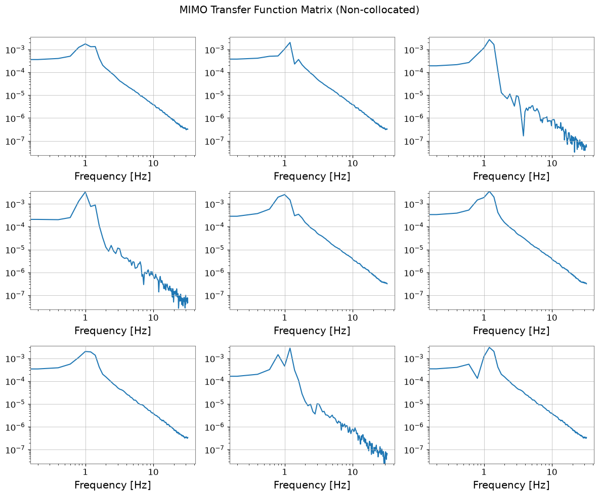
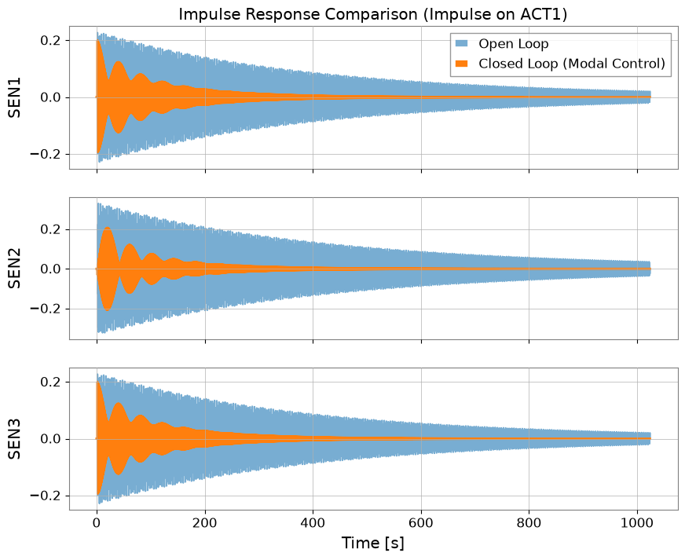
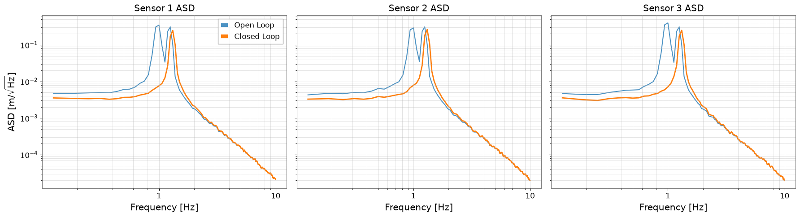

Note
This page was generated from a Jupyter Notebook. Download the notebook (.ipynb)
[ ]:
# Install gwexpy with pinned versions of core dependencies for reproducibility on Colab
%pip install -q "gwexpy[all]" "gwpy<5.0.0" "numpy<2.0.0" "scipy<1.13.0" "astropy<7.0.0"
Case navigation:
Back to the canonical gallery: Case Studies
Related reference surfaces: Reference Index, API: Matrix Containers, API: Frequency Series
Neighboring featured workflows: Noise Budgeting, Transfer Function Measurement
Active Damping for 6-DOF Active Vibration Isolation System (Non-Collocated Configuration)

This tutorial demonstrates an end-to-end workflow combining gwexpy and python-control to perform simulation, system identification, and control design for a multi-degree-of-freedom (MIMO) system.
Scenario: We consider an equilateral triangular vibration isolation platform supported by three legs (6-DOF rigid body). In this case, we deal with a non-collocated configuration where actuators and sensors are located at different positions.
Actuators: Located at the three leg positions (support points) at \(0^\circ, 120^\circ, 240^\circ\)
Sensors: Located at mid-points between the legs at \(60^\circ, 180^\circ, 300^\circ\)
When the input/output positions are misaligned like this, simple independent control for each axis does not work well. Therefore, we perform controller design in Modal Space.
Steps:
Physical Model Construction: Create a state-space model considering sensor and actuator placement.
MIMO Transfer Function Measurement: Visualize the transfer function matrix including off-diagonal components using
FrequencySeriesMatrix.System Identification: Define a control model from physical parameters and geometric configuration.
Damping Controller Design: Design “modal control” that converts sensor signals to modal coordinates and applies damping to each mode.
Closed-Loop Verification: Confirm vibration suppression performance through impulse response and ASD comparison.
[1]:
import warnings
warnings.filterwarnings("ignore", category=UserWarning)
warnings.filterwarnings("ignore", category=DeprecationWarning)
import control
import matplotlib.pyplot as plt
import numpy as np
from scipy import signal
from gwexpy import TimeSeries, TimeSeriesDict
from gwexpy.frequencyseries import FrequencySeriesMatrix
1. Simulation of 6-DOF Active Vibration Isolation System (Plant Model)
We define the rigid body equation of motion \(M \ddot{q} + C \dot{q} + K q = F\). Here we focus on the three vertical degrees of freedom (\(z, \theta_x, \theta_y\)).
Coordinate Transformation: For modal coordinates \(q = [z, \theta_x, \theta_y]^T\),
Actuator physical coordinates \(p_{act}\): \(0^\circ, 120^\circ, 240^\circ\)
Sensor physical coordinates \(p_{sen}\): \(60^\circ, 180^\circ, 300^\circ\)
We define the transformation matrices \(T_{act}, T_{sen}\) for each and incorporate them into the state-space model.
[2]:
# Physical parameters for the rigid-body modes we want to damp: one vertical translation and two tilts.
m = 100.0 # mass [kg]
I_x = 20.0 # moment of inertia [kg m^2]
I_y = 20.0
# Springs and dampers act at the leg locations, so their stiffness and loss enter through actuator-space geometry.
k_leg = 2000.0 # spring constant [N/m]
c_leg = 0.20 # damping coefficient [N s/m]
# Geometry sets how vertical motion mixes into pitch/roll; that lever arm is what creates modal cross-coupling.
R = 0.5 # [m]
# Define actuator and sensor placement separately so we can study the non-collocated case.
deg2rad = np.pi / 180.0
# Actuators push at the support legs.
angles_act = np.array([0, 120, 240]) * deg2rad
# Sensors are intentionally offset from the actuators, which is why a naive diagonal controller would mix modes.
angles_sen = np.array([60, 180, 300]) * deg2rad
# Build the geometry matrix that maps rigid-body modal coordinates into physical sensor/actuator displacements.
# Each row says how one leg/sensor displacement is produced by vertical motion plus pitch/roll about the platform center.
def make_transform_matrix(angles, radius):
T = np.zeros((3, 3))
for i, ang in enumerate(angles):
T[i, 0] = 1.0
T[i, 1] = radius * np.sin(ang)
T[i, 2] = -radius * np.cos(ang)
return T
T_act = make_transform_matrix(angles_act, R)
T_sen = make_transform_matrix(angles_sen, R)
print("Actuator Transform Matrix T_act:")
print(np.round(T_act, 2))
print("Sensor Transform Matrix T_sen:")
print(np.round(T_sen, 2))
# Mass/inertia stay diagonal in modal coordinates, which makes the physical rigid-body modes easy to interpret.
M_modal = np.diag([m, I_x, I_y])
# Stiffness and damping start in leg space because that is where the hardware is attached.
K_phys = np.diag([k_leg, k_leg, k_leg])
C_phys = np.diag([c_leg, c_leg, c_leg])
# Project stiffness/damping into modal space so translation and rotations can be controlled as separate physical modes.
# Use the actuator geometry here because the restoring forces are applied at the legs, not at the sensor locations.
K_modal = T_act.T @ K_phys @ T_act
C_modal = T_act.T @ C_phys @ T_act
# Build the plant in state space so open-loop and closed-loop motion can be compared with the same model.
# x = [q, q_dot]^T
A_sys = np.block(
[
[np.zeros((3, 3)), np.eye(3)],
[-np.linalg.inv(M_modal) @ K_modal, -np.linalg.inv(M_modal) @ C_modal],
]
)
B_sys_modal = np.block([[np.zeros((3, 3))], [np.linalg.inv(M_modal)]])
C_sys_modal = np.block([np.eye(3), np.zeros((3, 3))])
D_sys = np.zeros((3, 3))
# Convert between modal and physical coordinates because hardware talks in leg forces and sensor displacements, not pure modes.
# Input: Actuator forces u at leg locations -> generalized modal force Q = T_act.T * u
# Output: Sensor displacements y at sensor locations -> y = T_sen * q
B_sys = B_sys_modal @ T_act.T
C_sys = T_sen @ C_sys_modal
sys = control.StateSpace(
A_sys,
B_sys,
C_sys,
D_sys,
inputs=["ACT1", "ACT2", "ACT3"],
outputs=["SEN1", "SEN2", "SEN3"],
)
print(sys)
Actuator Transform Matrix T_act:
[[ 1. 0. -0.5 ]
[ 1. 0.43 0.25]
[ 1. -0.43 0.25]]
Sensor Transform Matrix T_sen:
[[ 1. 0.43 -0.25]
[ 1. 0. 0.5 ]
[ 1. -0.43 -0.25]]
<StateSpace>: sys[0]
Inputs (3): ['ACT1', 'ACT2', 'ACT3']
Outputs (3): ['SEN1', 'SEN2', 'SEN3']
States (6): ['x[0]', 'x[1]', 'x[2]', 'x[3]', 'x[4]', 'x[5]']
A = [[ 0.00000000e+00 0.00000000e+00 0.00000000e+00
1.00000000e+00 0.00000000e+00 0.00000000e+00]
[ 0.00000000e+00 0.00000000e+00 0.00000000e+00
0.00000000e+00 1.00000000e+00 0.00000000e+00]
[ 0.00000000e+00 0.00000000e+00 0.00000000e+00
0.00000000e+00 0.00000000e+00 1.00000000e+00]
[-6.00000000e+01 -3.33955086e-15 -2.16715534e-15
-6.00000000e-03 -3.68259567e-19 -2.35922393e-19]
[-1.70530257e-14 -3.75000000e+01 9.61481343e-15
-2.08166817e-18 -3.75000000e-03 9.61481343e-19]
[-1.13686838e-14 9.93438680e-15 -3.75000000e+01
-1.04083409e-18 9.61481343e-19 -3.75000000e-03]]
B = [[ 0. 0. 0. ]
[ 0. 0. 0. ]
[ 0. 0. 0. ]
[ 0.01 0.01 0.01 ]
[ 0. 0.02165064 -0.02165064]
[-0.025 0.0125 0.0125 ]]
C = [[ 1.00000000e+00 4.33012702e-01 -2.50000000e-01
0.00000000e+00 0.00000000e+00 0.00000000e+00]
[ 1.00000000e+00 6.12323400e-17 5.00000000e-01
0.00000000e+00 0.00000000e+00 0.00000000e+00]
[ 1.00000000e+00 -4.33012702e-01 -2.50000000e-01
0.00000000e+00 0.00000000e+00 0.00000000e+00]]
D = [[0. 0. 0.]
[0. 0. 0.]
[0. 0. 0.]]
2. MIMO Transfer Function Measurement
Since the sensor and actuator positions differ, strong responses should appear not only in the diagonal components (ACT1->SEN1) but also in the off-diagonal components.
[3]:
fs = 64
duration = 1024.0
t = np.arange(0, duration, 1 / fs)
n_samples = len(t)
# Drive all three actuators with broadband excitation so every mode is visible in the measured MIMO transfer matrix.
np.random.seed(0)
u_data = np.random.normal(0, 1.0, (3, n_samples))
# Simulate the plant response to that broadband drive, mimicking a system-identification experiment.
time_response = control.forced_response(sys, T=t, U=u_data)
# Wrap channels as TimeSeriesDict so transfer estimation uses the same workflow as measured detector data.
tsd_input = TimeSeriesDict(
{
f"ACT{i + 1}": TimeSeries(
u_data[i], t0=0, sample_rate=fs, name=f"Actuator {i + 1}", unit="N"
)
for i in range(3)
}
)
tsd_output = TimeSeriesDict.from_control(time_response, unit="m")
for i in range(3):
tsd_output[f"SEN{i + 1}"].name = f"Sensor {i + 1}"
# Estimate the full 3x3 transfer matrix to reveal how each actuator leaks into every sensor in the non-collocated layout.
tfs = [
[
tsd_input[f"ACT{j + 1}"].transfer_function(
tsd_output[f"SEN{i + 1}"], fftlength=5
)
for j in range(3)
]
for i in range(3)
]
tf_matrix = FrequencySeriesMatrix(
[[tf.value for tf in row] for row in tfs], frequencies=tfs[0][0].frequencies
)
tf_data = tf_matrix.value
freqs = tf_matrix.frequencies
# Plot the matrix magnitude to see both the dominant resonant paths and the off-diagonal cross-couplings that modal control must suppress.
tf_matrix.abs().plot(figsize=(12, 10), xscale="log", yscale="log").suptitle(
"MIMO Transfer Function Matrix (Non-collocated)\n"
)
plt.tight_layout()
plt.show()

3 & 4. Modal Control Design
Since the actuator and sensor positions do not coincide, simple decentralized control (\(F_i \propto \dot{y}_i\)) may become unstable. Therefore, we adopt a method that estimates modal displacement from sensor signals using transformation matrices, applies damping in modal space, and then distributes the result to actuator forces.
Control Flow:
Sensing: Estimate modal displacement \(q\) from sensor output \(y\)
\[q_{est} = T_{sen}^{-1} y\]Modal Damping: Apply pseudo-derivative filter \(K(s)\) to each mode to calculate modal force \(F_{modal}\)
\[F_{modal} = -K_{modal}(s) q_{est}\]Actuation: Distribute modal force \(F_{modal}\) to actuator forces \(u\)
\[u = (T_{act}^T)^{-1} F_{modal}\]
Overall, the MIMO controller \(K_{MIMO}\) becomes:
[4]:
# --- 1. Prepare sensing/actuation transforms so the controller works in modal coordinates instead of raw sensor space. ---
# In practice these come from an identified plant; here we use the true geometry to isolate the control concept.
# Sensor signals are mixed estimates of the rigid-body modes, so invert that geometry first.
S_sensing = np.linalg.inv(T_sen)
# Modal forces must be mapped back to physical actuator commands before the hardware can realize them.
# F_modal = T_act.T * u => u = inv(T_act.T) * F_modal
D_actuation = np.linalg.inv(T_act.T)
print("Sensing Matrix (Sensor -> Mode):")
print(np.round(S_sensing, 2))
print("Actuation Matrix (Mode Force -> Actuator):")
print(np.round(D_actuation, 2))
# --- 2. Design a modal damping filter that targets resonance energy instead of raw sensor motion. ---
# Gains are chosen in modal coordinates so each rigid-body resonance can be damped without feeding back the wrong combination of sensors.
# Translation and tilt could need different gains because their masses/inertias differ,
# but this example keeps them equal to highlight the geometry rather than controller tuning.
gain = 1000.0 # Modal damping gain
fc_l = 0.1
fc_h = 20.0
w_l = 2 * np.pi * fc_l
w_h = 2 * np.pi * fc_h
s = control.tf("s")
K_filter = gain * s / ((1 + s / w_l) * (1 + s / w_h))
# A diagonal modal controller means each mode is damped independently once the geometry has been unmixed.
K_modal_diag = []
for _ in range(3):
K_modal_diag.append(control.ss(K_filter))
# control.append builds the three independent modal filters into one block-diagonal system.
# Keeping the blocks separate avoids accidentally re-introducing artificial cross-coupling in the controller model.
# python-control then handles the series products needed to move back into actuator space.
K_modal_block = control.append(K_modal_diag[0], K_modal_diag[1], K_modal_diag[2])
# --- 3. Reassemble the controller in physical coordinates so the hardware sees actuator commands but the feedback law still damps modal motion. ---
# Multiplication order matters because a mistaken order would mix sensors and actuators incorrectly, creating non-physical feedback paths.
# The intended flow is measured sensor motion -> modal coordinates -> modal damping law -> actuator commands.
K_mimo = D_actuation * K_modal_block * S_sensing
print("MIMO Controller States:", K_mimo.nstates)
Sensing Matrix (Sensor -> Mode):
[[ 0.33 0.33 0.33]
[ 1.15 -0. -1.15]
[-0.67 1.33 -0.67]]
Actuation Matrix (Mode Force -> Actuator):
[[ 0.33 -0. -1.33]
[ 0.33 1.15 0.67]
[ 0.33 -1.15 0.67]]
MIMO Controller States: 6
5 & 6. Closed-Loop Verification (Impulse Response & ASD)
Using the constructed modal control system, we perform closed-loop simulation. We verify the response to an impulse disturbance on actuator 1 and to steady-state ground vibration on all axes.
[5]:
# Close the loop and compare it with open loop to see whether modal damping reduces the resonant motion.
sys_cl = control.feedback(sys, K_mimo, sign=-1)
# --- Impulse response shows how quickly a localized actuator kick rings down with and without modal damping. ---
u_impulse = np.zeros((3, n_samples))
u_impulse[0, 100] = 100.0 * fs # Impulse on actuator 1
resp_ol = control.forced_response(sys, T=t, U=u_impulse)
resp_cl = control.forced_response(sys_cl, T=t, U=u_impulse)
fig, axes = plt.subplots(3, 1, figsize=(10, 8), sharex=True)
for i in range(3):
ax = axes[i]
ax.plot(t, resp_ol.outputs[i], label="Open Loop", alpha=0.6)
ax.plot(t, resp_cl.outputs[i], label="Closed Loop (Modal Control)", linewidth=2)
ax.set_ylabel(f"SEN{i + 1}")
ax.grid(True)
if i == 0:
ax.legend(loc="upper right")
axes[2].set_xlabel("Time [s]")
axes[0].set_title("Impulse Response Comparison (Impulse on ACT1)")
plt.show()
# --- ASD comparison asks whether the controller lowers the disturbance-driven motion across the resonance band. ---
# Use low-frequency ground-like disturbance so the rigid-body resonance is excited in the same band the controller is meant to suppress.
np.random.seed(42)
wn = np.random.normal(0, 1.0, (3, n_samples))
b, a = signal.butter(1, 5.0, fs=fs, btype="low")
dist = signal.lfilter(b, a, wn) * 50.0
resp_ol_noise = control.forced_response(sys, T=t, U=dist)
resp_cl_noise = control.forced_response(sys_cl, T=t, U=dist)
tsd_ol = TimeSeriesDict.from_control(resp_ol_noise)
for i in range(3):
tsd_ol[list(tsd_ol.keys())[i]].name = f"SEN{i + 1}"
tsd_ol = TimeSeriesDict({ts.name: ts for ts in tsd_ol.values()})
tsd_cl = TimeSeriesDict.from_control(resp_cl_noise)
for i in range(3):
tsd_cl[list(tsd_cl.keys())[i]].name = f"SEN{i + 1}"
tsd_cl = TimeSeriesDict({ts.name: ts for ts in tsd_cl.values()})
fig, axes = plt.subplots(1, 3, figsize=(18, 5), sharey=True)
for i in range(3):
ax = axes[i]
asd_ol = (
tsd_ol[f"SEN{i + 1}"].asd(fftlength=16, overlap=8, method="welch").crop(0.1, 10)
)
asd_cl = (
tsd_cl[f"SEN{i + 1}"].asd(fftlength=16, overlap=8, method="welch").crop(0.1, 10)
)
ax.loglog(asd_ol, label="Open Loop", alpha=0.8)
ax.loglog(asd_cl, label="Closed Loop", linewidth=2)
ax.set_title(f"Sensor {i + 1} ASD")
ax.set_xlabel("Frequency [Hz]")
ax.grid(True, which="both", alpha=0.5)
if i == 0:
ax.set_ylabel(r"ASD [$\mathrm{m}/\sqrt{\mathrm{Hz}}$]")
ax.legend()
plt.tight_layout()
plt.show()
# Even with non-collocated sensors and actuators, the modal transforms let us damp the physical rigid-body modes instead of fighting geometry-induced cross-coupling directly in sensor space.

